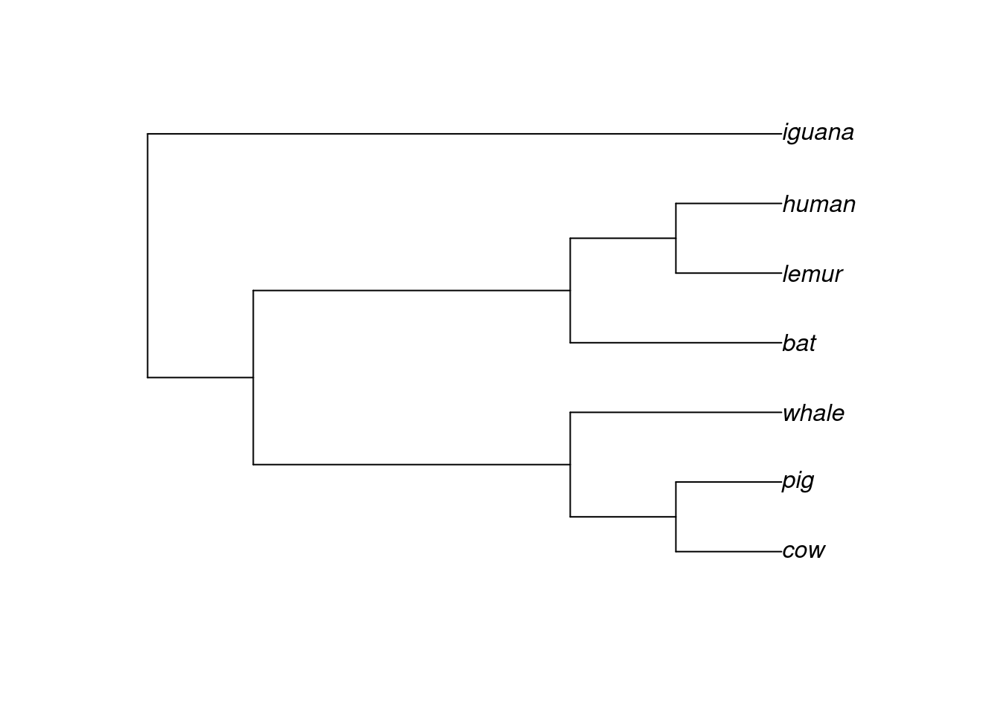

R is a very flexible programming language, and it allows developers to create their own data structures (called classes) for their packages. Over the years, some packages have become so popular that the classes they use to store data are now used the “standard” representations for particular types of data. Here, we will show some common data classes in evolutionary biology and comparative genomics research.
2.1 Goals of this lesson
In this lesson, you will learn to:
represent and work with sequence data using XString and XStringSet objects
represent and work with multiple sequence alignments using XMultipleAlignment objects
represent and work with phylogenies using phylo objects
2.2 The Bioconductor ecosystem
The Bioconductor project was created to develop, support, and disseminate free open source software to analyze biological data. It works as a repository of R packages for biological data analysis, with both “core packages” (developed and maintained by the Bioconductor Core Team), and community-contributed packages. We usually refer to Bioconductor as a “package ecosystem” because its packages are tightly integrated and designed for easy interoperation, such that different packages can be used together with minimal effort. An important facilitator of such interoperability is the existence of standardized data structures, such as GRanges objects for genomic coordinates, and DNA/RNA/AAStringSet objects for sequences.
2.2.1 The {Biostrings} package and XStringSet objects
The Biostrings package (Pagès et al. 2022) allows efficient manipulation of biological sequences, and its data classes are standard for all Bioconductor packages that involve sequence analyses. The data classes in Biostrings to represent sets of biological sequences are:
DNAStringSet: for sets of DNA strings.
RNAStringSet: for sets of RNA strings.
AAStringSet: for sets of amino acid strings.
For a single sequence, the each of the above has a correspoding XString class (i.e., DNAString, RNAString, AAString). For example, let’s create some XString objects manually:
# Convert `DNAString` to `RNAString`rna_seq <-RNAString(dna_seq)rna_seq
12-letter RNAString object
seq: AUGGCCGACUCA
# Translate `RNAString` to create `AAString`aa_seq <-translate(rna_seq)aa_seq
4-letter AAString object
seq: MADS
In real-world data analyses, we would work with multiple sequences (e.g., a whole genome or a whole proteome). Multiple sequences are stored in XStringSet objects, which can be read from FASTA files with readXStringSet() functions, namely:
readDNAStringSet(): read FASTA file containing multiple DNA sequences.
readRNAStringSet(): read FASTA file containing multiple RNA sequences.
readAAStringSet(): read FASTA file containing multiple AA sequences.
For example, let’s read an example FASTA file that come with the Biostrings package.
# Path to FASTA file containing an ORFfasta_file <-system.file("extdata", "someORF.fa", package ="Biostrings")fasta_file
2.2.2 The {Biostrings} package and XMultipleAlignment objects
Like XStringSet objects, XMultipleAlignment objects also store sequences, but sequences that were aligned using a Sequence Alignment algorithm. FASTA files containing aligned sequences can be read with XMultipleAlignment functions, namely:
readDNAMultipleAlignment(): read a FASTA file containing aligned DNA sequences.
readRNAMultipleAlignment(): read a FASTA file containing aligned RNA sequences.
readAAMultipleAlignment(): read a FASTA file containing aligned amino acid sequences.
For example:
# Path to FASTA file containing MSA of DNA sequencesaln_path <-system.file("extdata", "msx2_mRNA.aln", package ="Biostrings")aln_path
The ape package (Paradis and Schliep 2019) is one of the most popular packages for Analyses of Phylogenetics and Evolution (from where the name comes), and it represents phylogenies as phylo objects. Because of ape’s popularity, phylo objects have become the standard data structure for phylogenies in R.
To create phylo objects, you will use the function read.tree(), which accepts both the path to a file containing the tree (in Newick format, for example), or a text representation of a phylogeny. To demonstrate the structure of a phylo object, let’s create a phylogeny from text:
library(ape)# Create tree from texttext_tree <-"((((cow, pig),whale), (bat, (lemur, human))), iguana);"tree <-read.tree(text = text_tree)tree
Phylogenetic tree with 7 tips and 6 internal nodes.
Tip labels:
cow, pig, whale, bat, lemur, human, ...
Rooted; no branch lengths.
This is what a phylo object looks like. In a sense, a phylo object is a list, a standard R data structure, but with some standard elements. Let’s explore them:
As phylo objects have become standard, there are hundreds of functions (from dozens of packages) that were especially designed to work on phylo objects. For example, if you want to plot the tree, you would use the plot() function:
# Plot treeplot(tree)

We will explore other examples in future lessons.
Exercises
Use the following code to simulate a random tree and answer the questions below:
set.seed(123) # for reproducibilitysim_tree <-rtree(n =20)
How many terminal taxa (i.e., tips) are there?
What the the names of terminal taxa?
What taxon is more closely-related to the taxon “t1”?
Paradis, Emmanuel, and Klaus Schliep. 2019. “Ape 5.0: An Environment for Modern Phylogenetics and Evolutionary Analyses in R.”Bioinformatics 35: 526–28. https://doi.org/10.1093/bioinformatics/bty633.